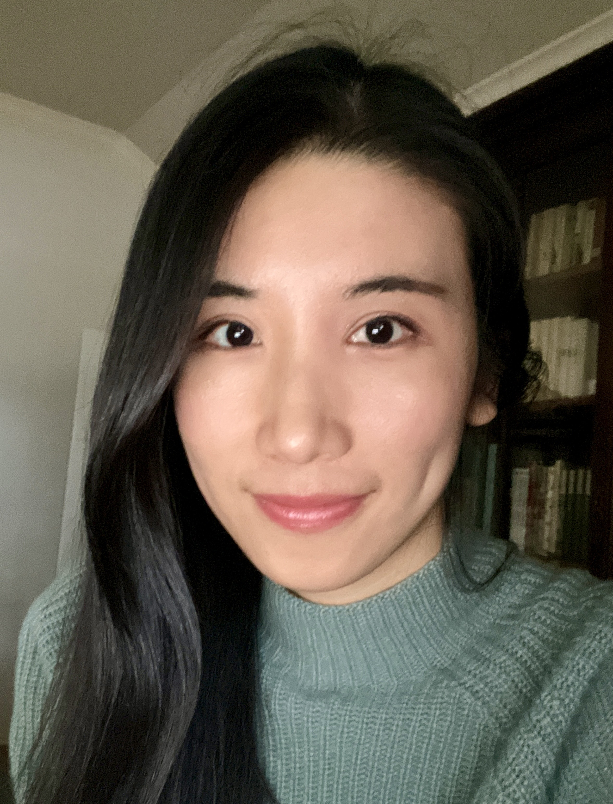

Chong Sun's personal page
GitHub
Google Scholar
CV

Hi, my name is Chong Sun, a theoretical and computational chemist.
My research focuses on describing and understanding microscopic behaviors of molecules
and condensed matter materials with numerical simulations. I believe in the power of computing,
and I strive to push the limit of our computational capabilities by combining numerical methods,
high-performance programming, machine learning and quantum computing.
Work experience
- Research scientist, Quantum algorithms research team, Zapata Computing Inc., 2022-2023
- Postdoctoral fellow, Department of Computer Science , University of Toronto, 2021-2022
- Graduate research assistant, Division of Chemistry and Chemical Engineering, Caltech, 2016-2020
Education
- Ph. D. in Theoretical Chemistry, Caltech, 2020
- B.S. in Chemistry, Peking University, 2015
Research Interest
- Computational chemistry
- Numerical simulations
- Quantum algorithms for electronic structure
- Physics-informed learning
Selected publications
- Finite-temperature density matrix embedding theory, Phys. Rev. B, 101, 075131 [PDF]
- Ground-state phase diagram of the three-band Hubbard model from density matrix embedding theory, Phys. Rev. Research 2, 043259 [PDF]
- Determining eigenstates and thermal states on a quantum computer using quantum imaginary time evolution, Nat. Phys. 16, 205 [PDF]
- Waveflow: Enforcing boundary conditions in smooth normalizing flows with application to fermionic wave functions, submited to NeurIPS 2023. [PDF]
Teaching and mentoring
- Course Instructor, Statistical Mechanics, University of Toronto, 2022
- Mentor to Romi Lifshitz, undergraduate student at McMaster Univeristy, 2021
- Mentor to Shu Fay Ung, undergraduate student at Caltech, 2019-2020
Non-academic life
- I enjoy reading. I gain power from ancient Chinese literatures.
- I translate the epic Chinese TV show Empresses in the Palace into English with other volunteers.
- I enjoy drawing and painting from nature, but it hurts my back and neck.